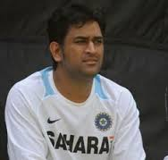

SS
Matthew is an interior designer living in India.
M. S. Dhoni; born 7 July 1981) is an Indian cricketer who captained the Indian team in limited-overs formats from 2007 to 2016 and in Test cricket from 2008 to 2014. An attacking right-handed middle-order batsman and wicket-keeper, he is widely regarded as one of the greatest finishers in limited-overs cricket.
He made his One Day International (ODI) debut in December 2004 against Bangladesh, and played his first Test a year later against Sri Lanka.Dhoni holds numerous captaincy records such as most wins by an Indian captain in Tests and ODIs, and most back-to-back wins by an Indian captain in ODIs.
He took over the ODI captaincy from Rahul Dravid in 2007 and led the team to its first-ever bilateral ODI series wins in Sri Lanka and New Zealand. Under his captaincy, India won the 2007 ICC World Twenty20, the CB Series of 2007–08, the 2010 Asia Cup, the 2011 ICC Cricket World Cup and the 2013 ICC Champions Trophy. In the final of the 2011 World Cup, Dhoni scored 91 not out off 79 balls handing India the victory for which he was awarded the Man of the Match. In June 2013, when India defeated England in the final of the Champions Trophy in England, Dhoni became the first captain to win all three ICC limited-overs trophies (World Cup, Champions Trophy and the World Twenty20).